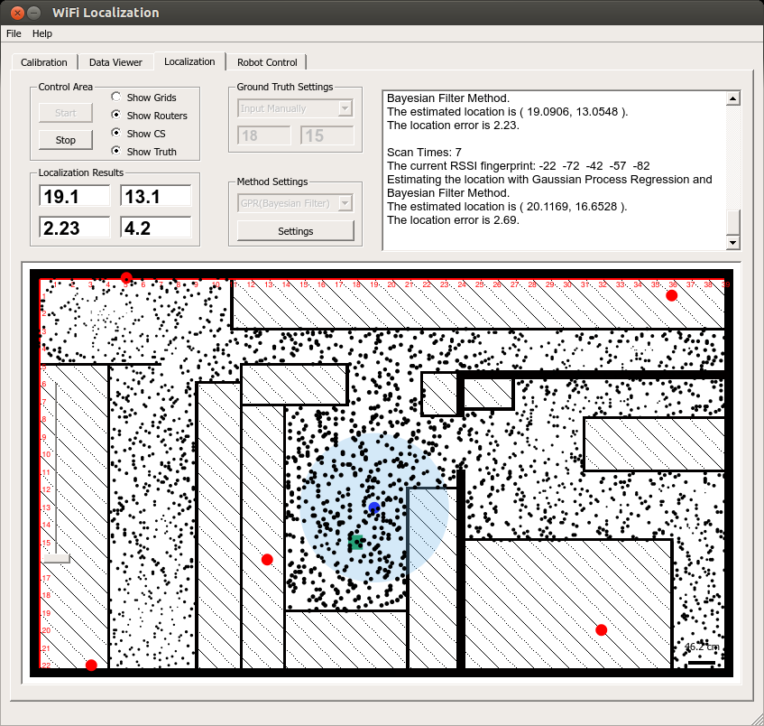
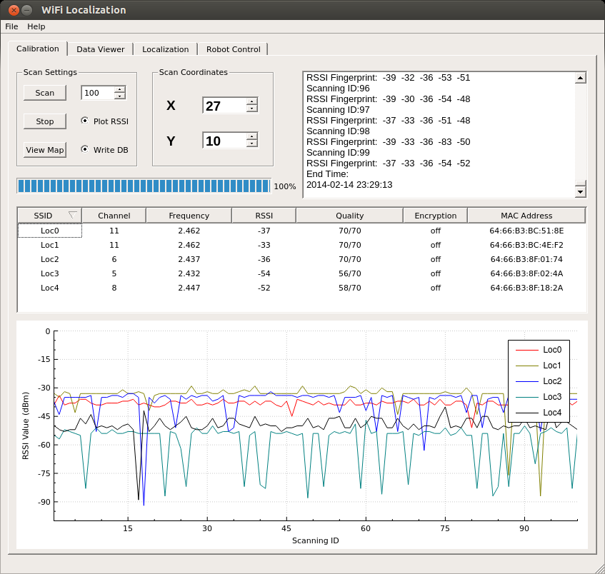

The localization software is developed with Qt GUI library. Following pics show the snapshots of the software. WiFi signal strength is obtanied from the linux wireless driver.
Paper:
Yuxiang Sun, Ming Liu and Max Q.-H. Meng, "WiFi signal strength-based robot indoor localization," in Information and Automation (ICIA), 2014 IEEE International Conference on, 2014, pp. 250-256. PDF
Code is available at: https://github.com/yuxiangsun/wifi_localization

